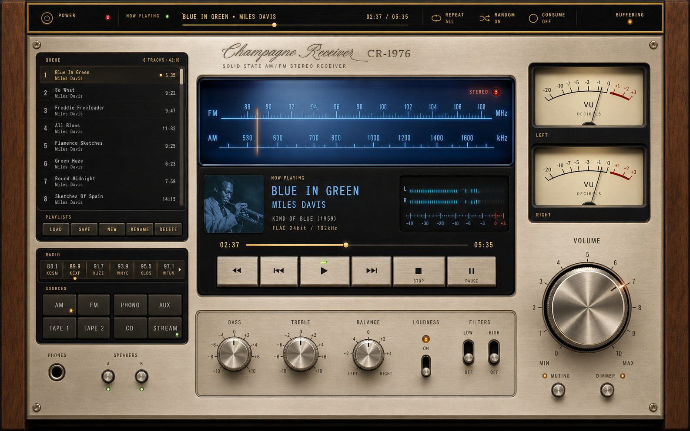
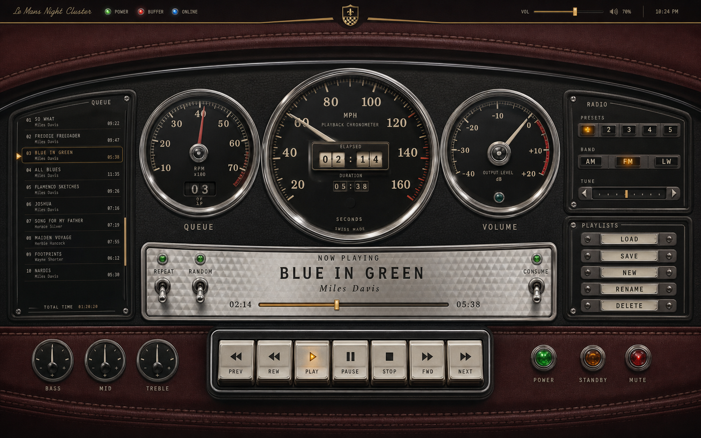
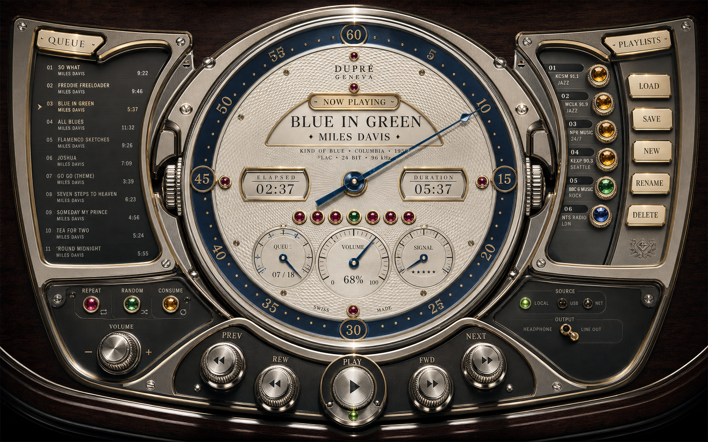
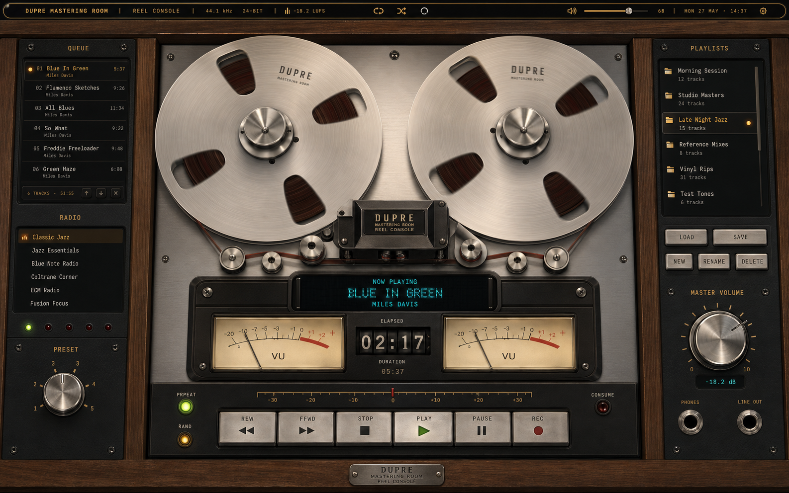
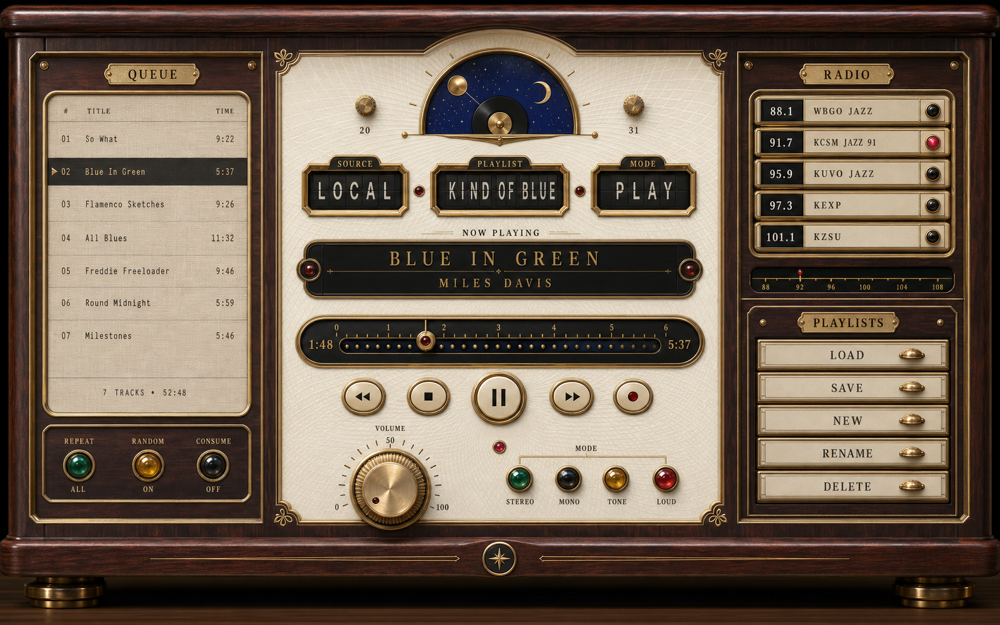
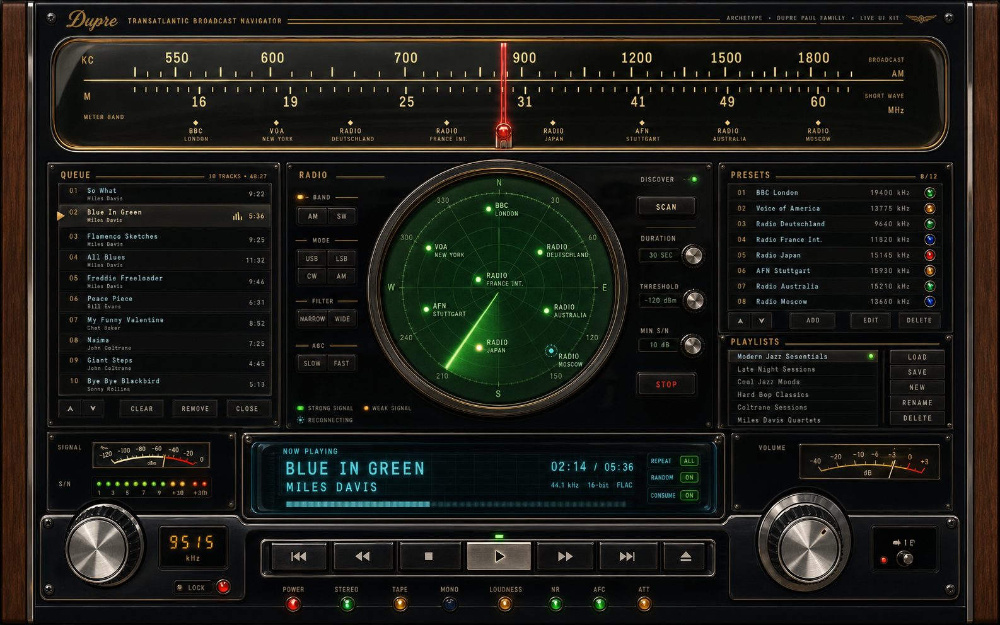

01
Champagne Receiver
hi-fi receiver · blue glass · walnut · moving-coil VU

02
Le Mans Night Cluster
grand tourer · leather · chrome gauges · tell-tales

03
Geneva Playback Chronograph
guilloché · sapphire chapter ring · jeweled complications

04
Mastering Room Reel Console
reel-to-reel · brushed aluminum · VU glass · walnut rack

05
Perpetual Calendar Salon
rosewood · ivory enamel · apertures · moonphase record

06
Transatlantic Broadcast Navigator
black glass · chrome · frequency scale · radio radar